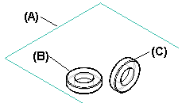
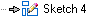

Copy Sketch command
Using the Copy Sketch command
The Copy Sketch command copies a sketch from a source document to a target document within the context of the active assembly. For example, you can use the Copy Sketch command to:
-
Copy a sketch in the active assembly to a part or subassembly within the active assembly.
-
Copy a sketch from a part or subassembly within the active assembly to the active assembly.
-
Copy a sketch from a part or subassembly within the active assembly to another part or subassembly within the active assembly.
The copied sketch is placed in the target document in the same relative orientation as viewed from the assembly. This is important when the target document is used more than once in the assembly.
The position and orientation of the copied sketch (A) is different depending on whether you select PartA.par;1 (B) or PartA.par;2 (C) as the target document.

You can use the Copy Sketch to Target dialog box to specify the target document and whether the child sketch is associatively linked to the parent sketch.
Copying sketches associatively
When you associatively copy a sketch, only the wireframe elements are copied. No dimensions or relationships are copied to the child sketch. Later, if you need to break the associative link between the parent and child sketch, you can use the Break Links command to break the associative link. When you break the link, connect relationships are added to the endpoints of the sketch elements, but no dimensions are added.
Copying sketches non-associatively
When you non-associatively copy a sketch, dimensions and relationships are also copied, when possible. Dimensions or relationships between a sketch element and an element that is not part of the sketch, such as a reference plane or part edge, cannot be copied.
Also, when you non-associatively copy a sketch, the Sketch entry in PathFinder in the target document will have a gray arrow adjacent to the feature, which indicates that the parent element for the sketch plane must be defined.

You define the parent plane by editing the feature. For example, you can specify that the sketch plane is coincident or parallel to an existing face or reference plane. When defining the sketch plane, be sure that you properly define the x-axis for the plane to avoid rotating the sketch elements.
Look up more details
Sketch View commandSketch command
Closed Sketch Indicator command
Project to Sketch command
Project to Sketch command bar
Project to Sketch Options dialog box
Peer Edge Locate command
Silhouette Edge Locate command
Clean Sketch command
Clean Sketch command bar
Clean Sketch Options dialog box
Copy Sketch command bar
Copy Sketch To Target dialog box
Activate Regions command
Merge with Coplanar Sketches command
Migrate Geometry and Dimensions command
Tear-Off Sketch command
Tear-Off Sketch command bar
Tear-Off Sketch Options dialog box